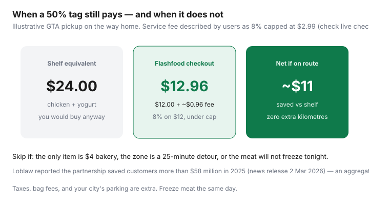

Food & Groceries · Canada
How to use Flashfood in Canada: save up to 50% without wasting food (or time)
Shoppers hear “up to 50% off” and then miss the pickup window, ignore the service fee, or bring home meat that becomes compost. Flashfood is not a coupon app. It is a Loblaw surplus fridge with a map: you choose specific items, pay in the app, and collect them from a marked zone inside a participating store.
Loblaw’s 2 March 2026 news release said the partnership helped Canadians save more than $58 million on groceries in 2025, diverted more than 21 million pounds of food from landfill that year, and added more than 92,000 new Flashfood shoppers. Cumulative partnership figures in that release: more than $295 million saved and over 105 million pounds diverted across seven years, in more than 900 Loblaw stores. Those are company aggregates. Your household gets a chicken tray if you run a freezer system.
Disclosure: Flashfood is not a natural affiliate product. Freezer and meal-prep tools, plus grocery gift cards for the remaining basket, are offer types. Saving Optimizer may earn a commission if we later add those links. We do not currently claim a partnership with Flashfood or Loblaw. This guide works with the free app.
Key takeaways
- Shop meat, dairy, and sturdy produce you already cook. Skip mystery bakery if it becomes waste.
- Pickup is in-store, in a Flashfood Zone, in a window. Miss it and you have donated to landfill with extra steps.
- Factor the service fee (community reports: 8% capped about $2.99 as of January 2026 — check checkout) and any extra kilometres.
- Freeze meat the same night. Label it. That is the whole “system.”
- Combine Flashfood with a Flipp staple run at the same Loblaw banner. Do not make a dedicated trip for $4.
How Flashfood works at Loblaw-family stores
Open the app, set location, browse items listed by nearby stores. Each listing shows a discounted price against a reference retail. You pay in the app (card, including some Amex reports — useful because many Loblaw tills still do not take Amex). You pick up in the Flashfood Zone during the window on the order. Staff hand you a bag or point at a labelled fridge. It is not PC Express substitution logic. What you bought is what should be there; if an item is gone, use the in-app help path, not a till argument.
Coverage follows Loblaw banners: No Frills, Superstore, Maxi, Loblaws, Zehrs, Your Independent Grocer, Provigo, Wholesale Club, Atlantic Superstore, Dominion in Newfoundland. FoodHero is the usual Sobeys-family chooser; Too Good To Go is surprise bags. Use the three-app comparison if your city has more than one pin.
Best categories: meat, dairy, produce, bakery
| Category | Usually worth it? | Rule |
|---|---|---|
| Meat & poultry | Yes, if you freeze | Cook or freeze the same day. Ground meat is not a three-day plan. |
| Dairy (milk, yogurt, cheese) | Yes, if dates match your pace | Milk is for this week. Cheese often lasts. Yogurt in a one-person fridge is a trap. |
| Produce | Selective | Carrots, cabbage, apples: maybe. Pre-washed salad: often slime tomorrow. |
| Bakery | Optional treat | Freeze bread. Do not “save” four desserts. |
| Prepared foods | Rarely for budget | Convenience with a discount is still convenience. Eat tonight or skip. |
CBC coverage of surplus apps in Waterloo Region (2024) is a useful reminder: the discount is real, the logistics are local, and not every city has the same density of pins. Check your map the night you plan groceries, not in the parking lot.
Pickup zones, timing, and service fees to factor in
Windows are often later in the day, which fits a commute pickup and fights the “I’ll go at noon” fantasy. If your only free hour is 9 a.m., Flashfood may not be your app.
Fees: community receipts (stenoodie and others) describe a 5% service fee from May 2024, then 8% from 6 January 2026, with a cap around $2.99 per order, plus tax on the fee in some receipts. Flashfood’s terms have moved toward a generic “service fee on every order.” We date-stamp the community numbers and tell you to trust the checkout. A $12 meat order at 8% is about $0.96 — annoying, not fatal. A $4 bakery order with a detour is fatal.

Freeze-same-day workflow for discounted meat
- Before you buy, look at tonight’s dinner and freezer space. No space, no tray.
- Pickup on the way home, not as a Saturday outing.
- At the counter, check smell and package integrity. Use in-app support if it is off — do not cook a science experiment to “not waste the deal.”
- Home: portion into meal-size bags, label cut and date, freeze what you will not cook in 24 hours.
- Put those portions on next week’s menu so they actually leave the freezer. See food-waste systems.
This is the same leftover-and-freezer habit families already need. Flashfood just fills the protein slot when the flyer did not.
Combining Flashfood with a Flipp staple run
The winning Canadian pattern is one Loblaw trip: Flipp staples and price matches at No Frills or Superstore, Flashfood zone on the way in or out, PC Optimum scan at the main till for the rest of the cart. Flashfood itself is prepaid, so it does not live on the grocery receipt — do not expect those dollars to earn PC points unless a promotion says so.
Do not rebuild the whole week around whatever happens to be in the zone. The weekly system still decides dinners. Flashfood is a substitution for a protein you would have bought.
When the fee and drive wipe out savings
Skip the order when:
- The only item is low-dollar bakery and you are not already going.
- The extra drive is 20 minutes in winter with parking.
- You cannot freeze or cook the meat tonight.
- Produce looks like a compost subscription.
- You already have two unlabelled meat bags in the freezer from last month.
CRA mileage rates change; use your own cents-per-kilometre. A $11 net save (chart example) dies quickly at $0.70/km on a 20 km round trip.
Realistic monthly savings expectations
A household that already shops a Flashfood store once a week and freezes protein might see $30–$80 a month versus paying shelf on those same items — teaching range, not a promise. A household that installs the app, buys muffins twice, and quits will save nothing and tell Reddit the app is a scam.
Loblaw’s $58 million (2025) divided by “shoppers” is not your number. Track four weeks of Flashfood receipts versus the reference retail, minus fees, minus any item you threw out. The last line is the only honest monthly figure.
Gift-card note: some people buy grocery gift cards via cashback portals for the remaining (non-Flashfood) basket. That is an offer type, not a requirement. Flashfood checkout is its own payment.
Sources & date stamps
- Loblaw news release, 2 Mar 2026: more than $58 million saved in 2025; 21 million pounds diverted; 92,000 new shoppers; 900+ stores; seven-year totals $295 million / 105 million pounds.
- Flashfood product positioning (chooser marketplace, up to 50% off, in-store zone pickup).
- Community fee notes: 5% from May 2024; 8% with ~$2.99 cap reported from 6 Jan 2026 (verify checkout).
- CBC News, Waterloo Region surplus-app reporting (2024) for local logistics context.
Frequently asked questions
Which Canadian stores use Flashfood?
Flashfood’s grocery footprint is tied to Loblaw banners — No Frills, Superstore, Maxi, Zehrs, Provigo, Wholesale Club, Dominion in Newfoundland, and others. Loblaw said the partnership reached more than 900 stores. Check the in-app map; not every location lists food every day.
How much is the Flashfood service fee?
Users reported an 8% service fee capped around $2.99 as of January 2026, after an earlier 5% fee. Flashfood’s public terms now describe a service fee without always printing the percent. Believe the checkout screen on your order.
Can I get Flashfood delivered?
In the standard Loblaw flow you pay in the app and pick up in the store’s Flashfood Zone during the window shown. It is not a substitute for PC Express. If the window conflicts with your commute, skip the order.
Is Flashfood cheaper than Too Good To Go?
They do different jobs. Flashfood is a chooser app for specific grocery SKUs, especially meat and dairy. Too Good To Go is mostly surprise bags. Compare them in our surplus-app guide rather than installing one and declaring the category useless.
How much can a household realistically save?
Loblaw reported more than $58 million in customer savings in 2025 across the whole partnership — not a per-household figure. A weekly protein top-up on your existing No Frills run is often $8–$20 if you freeze what you cannot eat. A dedicated drive for $4 of yogurt is a loss.